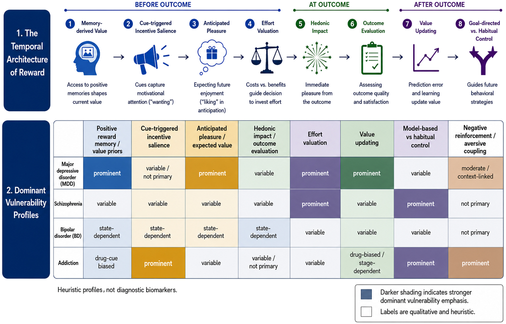
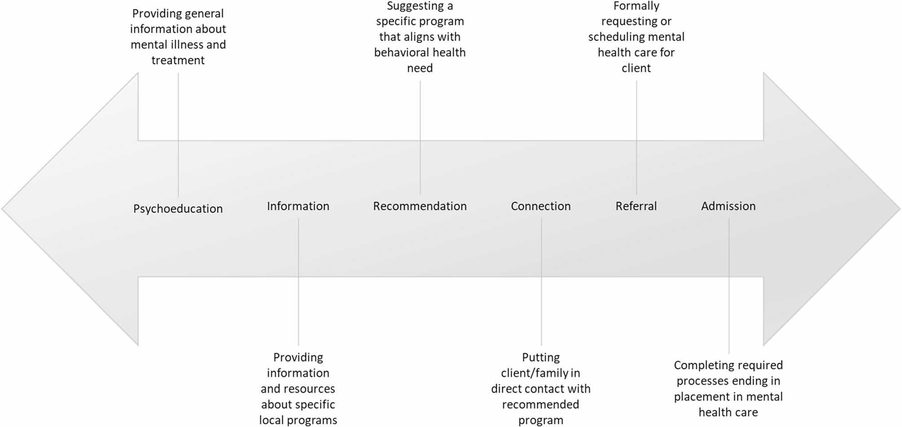
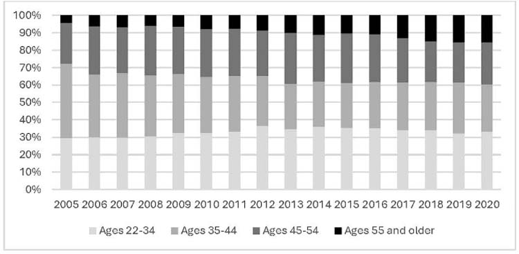
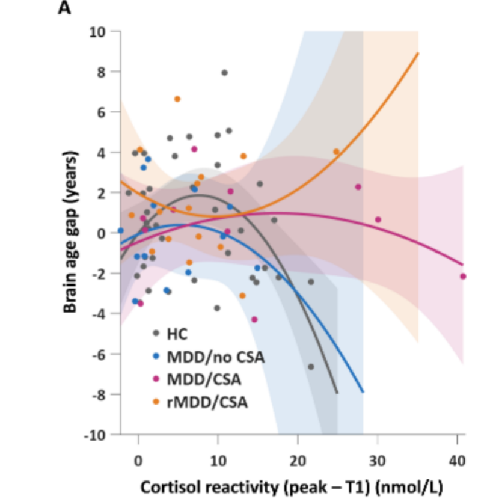
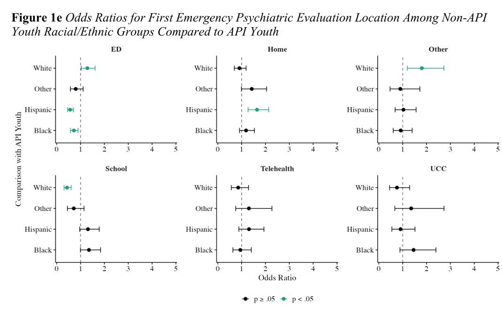
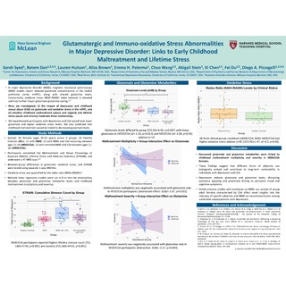
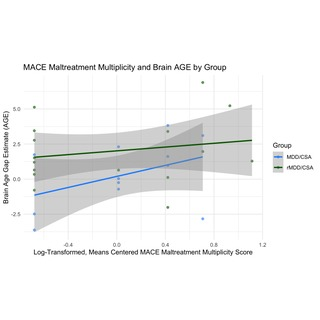
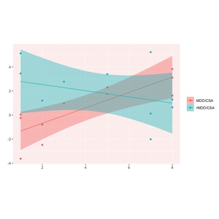
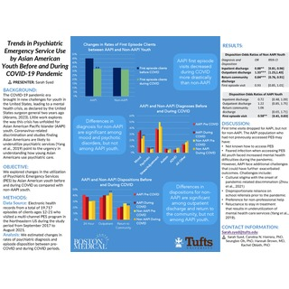
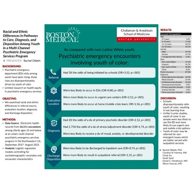

Recent News
| Nov 2026 |
Upcoming Co-authored poster (presented by Sofía Cardenas) at the International Society for Developmental Psychobiology annual conference, New Orleans, on adult attachment and fronto-limbic morphometry in women with depressive symptoms and childhood sexual abuse histories. |
| Jan 2027 |
Upcoming Co-authored poster (presented by Rotem Dan) at the American College of Neuropsychopharmacology (ACNP) Annual Meeting, San Diego, on brain age gap, developmental timing of childhood maltreatment, and cortisol reactivity in major depressive disorder. |
| Sep 2026 |
Applying to clinical psychology PhD programs this cycle. |
| Oct 2026 |
Submitted my third first-author paper, on glutamatergic and redox abnormalities in major depressive disorder, to Biological Psychiatry. |
| Nov 2026 |
Co-first-authored review on reward dysfunction published in Biological Psychiatry: Global Open Science. DOI |
| Oct 2026 |
Received a revise and resubmit from the Asian American Journal of Psychology for Elevated Acuity in Crisis. |
| Jul 2026 |
Paper on racial and ethnic variations in a multi-channel psychiatric emergency services program published in Community Mental Health Journal. DOI |
| May 2026 |
Submitted my second first-author paper, on brain age gap, cortisol reactivity, and developmental timing of childhood maltreatment in major depressive disorder, to Translational Psychiatry. |
| Apr 2026 |
Submitted my first first-author paper, Elevated Acuity in Crisis, on clinical pathways in psychiatric emergency services among Asian American and Pacific Islanders, to the Asian American Journal of Psychology. |
| Apr 2026 |
Joined the OCD Institute's Office of Clinical Assessment and Research at McLean, supporting two NIH-funded hybrid effectiveness-implementation trials. |
| Nov 2025 |
Paper on behavioral health professionals in a police co-response model published in Health & Justice. DOI |
| Oct 2025 |
Gave a talk on stress and brain aging to the LATN and UC Irvine Noel Drury, M.D. Institute joint lab meeting. slides |
| Sep 2025 |
Presented first-author work on glutamatergic and immuno-oxidative stress abnormalities in MDD at the Society for Research in Psychopathology, Los Angeles. poster |
| Mar 2025 |
Paper on psychiatric emergency service use trends among adults experiencing homelessness published in the Journal of Health Care for the Poor and Underserved. DOI |
| Jun 2024 |
Joined the Laboratory for Affective and Translational Neuroscience at McLean Hospital / Harvard Medical School. |
| May 2024 |
Graduated from Tufts University summa cum laude. |
| May 2024 |
Defended my honors thesis, Prejudice and Bias Awareness in Anticipated Interracial Interactions, with High Honors. |
| Apr 2024 |
Received the Student Poster Award from the Society of Pediatric Psychology. |
| Apr 2024 |
Received the Priscilla N. Dunne Prize from the Tufts Department of Psychology. |
|
Research Interests
I study how early life stress and childhood maltreatment intersect with minoritized identity to shape risk for depression and psychiatric crisis. My goal is to connect neurobiological and structural mechanisms with real-world clinical and health systems research, in service of better identification, prevention, and intervention for at-risk populations.
Concretely, I work across three lines of research:
Neurobiology of stress and depression. Structural and functional MRI, magnetic resonance spectroscopy, brain-age modeling, and salivary cortisol and immuno-oxidative stress markers, to study how the timing and severity of childhood maltreatment shape reward processing and accelerated brain aging in major depressive disorder.
Psychiatric emergency care and disparities. Large-scale electronic health record and survey data to examine racial and ethnic disparities in diagnosis, encounter setting, and discharge disposition within psychiatric emergency systems, with a focus on Asian American and other minoritized populations.
Clinical translation and implementation. Adapting and testing scalable digital interventions (e.g., cognitive bias modification for OCD, single-session interventions for postpartum intrusive thoughts) using frameworks like FRAME and ADAPT to bridge mechanistic research with accessible clinical care.
|
Publications
Peer-reviewed work below; highlighted entries are ones I led. Google Scholar
|
|
|
POC youth perceptions of sexual orientation and gender identity discrimination in mental healthcare settings
Freibott, C., Syed, S., Barnard, E., Nicole-Herrera, C., Lipson, S. K., Duncan, A., & Clark, J.
International Journal of LGBTQ+ Youth Studies · in press
manuscript
How LGBTQ+ youth of color experience identity-based discrimination in mental health care settings.
|
|

|
Reward dysfunction in time: Toward a dynamic psychiatry of motivation and pleasure
Pizzagalli, D. A., Lam, C. S. T.*, Syed, S.*, & Shiva, A.*
*Equal contributions.
Biological Psychiatry: Global Open Science, 6(6), Article 100801, 2026
doi
A commentary reframing reward dysfunction (e.g., anhedonia) as a temporally organized process rather than a single static deficit — decomposing reward-related behavior into stages (memory-derived value, incentive salience, anticipated pleasure, effort valuation, hedonic impact, outcome evaluation, value updating, and habitual control) that can each break down differently across depression, schizophrenia, bipolar disorder, and addiction, with implications for how motivation and pleasure deficits are measured and targeted in treatment.
|
|
|
Racial and ethnic variations in a multi-channel psychiatric emergency services program
Oh, S., Nicole-Herrera, C., Duncan, A., Syed, S., Xu, C., Brown, E., Brown, H., Henderson, D., Were, L., & Oblath, R.
Community Mental Health Journal, 2026
doi
How patients of different racial and ethnic backgrounds move through the distinct care channels of a psychiatric emergency services program.
|
|

|
Bridging crisis and care: Exploring the role of behavioral health professionals in a police co-response model
Oblath, R., Beaugard, C. A., Nicole-Herrera, C., Xu, C., Syed, S., Sadatis, C., Duncan, A., Gann, G., Plange, E., Ferguson, T., Khan, S., Katkhuda, F., Henderson, D. C., Savage, J., & Morabito, M. S.
Health & Justice, 13(1), Article 72, 2025
doi
Analyzed nearly three years of clinical notes (4,111 encounters, 2019–2022) from the Boston Police Department's co-response program using an inductive, grounded-theory approach. Found that behavioral health professionals interact with a wide range of community members (police, individuals in crisis, family, providers), assess behavioral health symptoms and risk in the field, and provide clinical, police-facing, and general supports — a conceptual framework suggesting mechanisms by which co-response programs can reduce reliance on the criminal justice system for behavioral health crises.
|
|

|
Psychiatric emergency service use trends: Adults experiencing homelessness in Massachusetts from 2005–2020
Rudolph, K. A., Beaugard, C. A., Xu, C., Syed, S., Duncan, A., Brown, H. E., Henderson, D. C., & Oblath, R.
Journal of Health Care for the Poor and Underserved, 36(1), 240–256, 2025
doi
Retrospective review of 227,553 psychiatric emergency encounters (2005–2020) found that adults experiencing homelessness (AEH) accounted for a rising share of visits — from 23.3% in 2005 to 41.6% in 2020 — with the proportion of AEH aged 55+ more than tripling (4.2% to 15.4%) and over six times the odds of being high-frequency utilizers (10+ visits/year) compared to housed adults, supporting interventions that address housing access directly within emergency encounters.
|
Under Review & In Preparation
|
|

|
Brain age gap, cortisol reactivity, and developmental timing of childhood maltreatment in major depressive disorder
Dan, R.*, Syed, S.*, Hutson, L. M., Brown, A. R., Palermo, E. H., Belleau, E. L., Kaiser, R. H., Du, F., & Pizzagalli, D. A.
*Co-first authorship.
Under review · preprint available
preprint
Across two samples of women with childhood sexual abuse histories, MRI-derived brain age gap tracked maltreatment severity only among women with current MDD — and the direction flipped depending on developmental timing (negative association after early-childhood abuse, positive after later abuse/adolescence). Depression severity, conversely, predicted brain age gap only in women without maltreatment histories. Women with current MDD and abuse histories also showed heightened, prolonged cortisol responses to acute stress, with nonlinear (inverted U-shaped) links to brain age gap. Together, this suggests brain age gap is not a simple biomarker of depression, but reflects how maltreatment timing, current clinical state, and stress physiology jointly shape biological aging.
|
|

|
Elevated acuity in crisis: Clinical pathways in psychiatric emergency services among Asian American and Pacific Islanders
Syed, S., Oh, S., Nicole-Herrera, C., Ferguson, T., Brown, H. E., & Oblath, R.
Asian American Journal of Psychology · revise and resubmit
manuscript
EHR study of 101,093 encounters (38,170 individuals; 1,260 API) in an urban safety-net psychiatric emergency program. Relative to several non-API comparison groups, API adults and youth were more likely to enter through acute settings (EDs) and less likely through lower-intensity settings (UCCs, home, telehealth); API patients had markedly elevated odds of psychosis diagnoses despite population-level data showing lower psychosis prevalence among Asian Americans; and API patients were more likely to be discharged to inpatient care and less likely to outpatient referral. I developed the research questions and led every phase from conceptualization through manuscript preparation.
|
|
|
Glutamatergic and Redox Abnormalities in Major Depressive Disorder: Links to Childhood Maltreatment and Perceived Stress
Syed, S.*, Dan, R.*, Hutson, L. M., Brown, A. R., Wang, C., Stein, A., Chen, X., Du, F.†, & Pizzagalli, D. A.†
*Co-first authorship; †co-senior authorship.
Biological Psychiatry · under review
preprint /
poster
Study linking glutamatergic and immuno-oxidative stress markers in major depressive disorder to the developmental timing and cumulative burden of early adversity.
|
|
|
Attachment and fronto-limbic morphometry in women with depressive symptoms and childhood sexual abuse histories
Cárdenas, S. I., Dan, R., Schoonmaker, J., Syed, S., Brown, A., Hutson, L., Palermo, E., Hollman, S., Du, F., Marmarosh, C., & Pizzagalli, D.
Under review
How adult attachment style relates to fronto-limbic brain structure in women with depressive symptoms and histories of childhood sexual abuse.
|
|
|
Assertion, adjudication, and shared decision making in psychiatric emergency services: Perspectives from youth of color and guardians
Nicole-Herrera, C., Syed, S., Freibott, C., Lipson, S. K., Duncan, A., & Clark, J.
Children and Youth Services Review · revise and resubmit
Thematic analysis of semi-structured interviews with youth of color, guardians, and clinicians about how decisions actually get made during a psychiatric emergency visit.
|
Selected Presentations
Nine posters and three talks in total; the ones I presented are below. Full list in my CV.
|
|

|
Glutamatergic and immuno-oxidative stress abnormalities in major depressive disorder
Syed, S. (Presenter), Dan, R., Hutson, L. M., Brown, A. R., Palermo, E. H., Wang, C., Stein, A., Chen, X., Du, F., & Pizzagalli, D. A.
Society for Research in Psychopathology, Los Angeles, September 2025
poster
|
|

|
Multi-modal investigation of the relationships between stress and brain aging
Syed, S. (Presenter), Dan, R., Hutson, L. M., Brown, A. R., Palermo, E. H., & Pizzagalli, D. A.
Invited talk, LATN & UC Irvine Noel Drury, M.D. Institute joint lab meeting, October 2025
slides
|
|

|
Multi-modal investigation of the relationships between stress and brain aging
Syed, S. (Presenter), Dan, R., Palermo, E. H., Hutson, L. M., Brown, A. R., Zhu, C., Stein, A., Chen, X., Du, F., & Pizzagalli, D. A.
Harvard Psychiatry Research Day (Feb 2025) and McLean Research Day (Jan 2025)
poster
|
|

|
Trends in psychiatric emergency service use by Asian American youth before and during the COVID-19 pandemic
Syed, S. (Presenter), Nicole-Herrera, C., Oh, S., Brown, H. E., & Oblath, R.
Society of Pediatric Psychology, New Orleans, April 2024
poster
Student Poster Award winner, selected by the SPP board.
|
|
|
Burden of physical illness in schizophrenia: Sociodemographic factors and risk of multimorbidity
Gouse, B. M., Baul, T., Syed, S., Boliver, E., Lancet, J., & Brown, H. E.
Schizophrenia International Research Society, Florence, Italy, April 2024
poster
|
|

|
Racial and ethnic differences in pathways to care, diagnosis, and disposition among youth at a psychiatric emergency services program
Oblath, R., Nicole-Herrera, C., Xu, C., Syed, S., Henderson, D. C., & Duncan, A.
American Psychiatric Association, San Francisco, May 2023
poster
|
|
|
Laboratory for Affective and Translational Neuroscience
McLean Hospital / Harvard Medical School · PI: Diego A. Pizzagalli, PhD
Clinical Research Assistant II, June 2024 – present
I independently direct day-to-day operations of the NIH-funded R01 Early Life Stress and Depression (MH095809), which uses fMRI, MRS, and behavioral tasks to study mechanisms linking childhood sexual abuse to major depressive disorder. I manage the full participant pipeline for adults with current and remitted MDD — phone screening (560+), informed consent (60+), clinical assessment, and 6- and 12-month follow-up (35+); independently process and bank biospecimens (saliva and blood; 140+); lead statistical analyses integrating multimodal data that have informed 2 first-author manuscripts and 2 first-author posters; serve as primary IRB regulatory contact (45+ amendments); and recruit, train, and supervise 10+ research assistants and volunteers.
|
|
|
Office of Clinical Assessment and Research, OCD Institute
McLean Hospital · PI: Martha J. Falkenstein, PhD
Clinical Research Assistant, April 2026 – present
I coordinate two NIH-funded hybrid type 1 effectiveness-implementation trials: a smartphone-based Cognitive Bias Modification for Interpretation (CBM-I) program targeting interpretation bias in OCD (K23MH126193), and an intervention for postpartum intrusive thoughts (R01MH146063). I consent and manage the full participant timeline for the CBM-I trial's waitlist arm, delivering up to 8 training sessions per participant; co-lead qualitative analysis of stakeholder exit interviews (n=20), building a 64-code codebook across a 3-person coding team; and lead adaptation of a single-session postpartum intervention using the FRAME and ADAPT frameworks.
|
|
|
Boston Emergency Services Team
Boston Medical Center, Department of Psychiatry · PI: Rachel Oblath, PhD
Lead Undergraduate Research Assistant, January 2022 – April 2026
I first-authored a study of encounter setting, diagnosis, and discharge disposition among Asian American adults and youth in a psychiatric emergency EHR database (N=38,170), leading every phase from research question through submission. I led NVivo thematic analysis of 18 interviews with youth of color and guardians for the NIMH-funded Youth in Emergency Study (R36MH126473), yielding 2 manuscripts in revision; recruited and consented participants (50+) across 3 studies, screening by chart review (100+); and contributed to 3 further published manuscripts on disparities in emergency psychiatric care.
|
|
|
Wellness and Recovery After Psychosis Clinic
Boston Medical Center, Department of Psychiatry · PI: Hannah Brown, MD
Undergraduate Research Assistant, September 2023 – May 2024
I authored literature reviews shaping study design for a published manuscript; led recruitment and consent (30+) of individuals with active psychotic symptoms across clinical settings, adapting communication for participants with limited decisional clarity; and managed systematic chart review (205+) and longitudinal data quality control for the Massachusetts Psychosis Network Treatment Battery.
|
|
|
Disparities Research Unit
Massachusetts General Hospital · PI: Margarita Alegría, PhD
Undergraduate Research Assistant, January 2024 – May 2024
I administered structured psychiatric assessments (PHQ-9, GAI, HSCL-25, WHODAS, PCL-5, MoCA) by phone (35+) at 6- and 12-month follow-up for the Positive Minds–Strong Bodies RCT, a combined psychoeducational and exercise intervention for minority and immigrant older adults.
|
|
|
Social Cognition Lab
Tufts University, Department of Psychology · Advisor: Keith Maddox, PhD
Honors Thesis Student, June 2023 – May 2024
My senior thesis, Prejudice and Bias Awareness in Anticipated Interracial Interactions, examined how symbolic racism and bias awareness shape anticipated interracial anxiety among people of color. I designed a Qualtrics paradigm using deception to capture emotional shifts during anticipated cross-racial interaction, secured the IRB protocol and debriefing plan, ran linear regressions in R, and built a 77-code qualitative framework in NVivo. Graduated with high honors.
|
Instruments administeredPHQ-9, Geriatric Anxiety Inventory, Hopkins Symptom Checklist-25, WHO Disability Assessment Schedule, PTSD Checklist for DSM-5 (PCL-5), Montreal Cognitive Assessment, Suicide Implicit Association Test
Screening and interviewingdiagnostic phone screenings (560+) covering psychiatric history, depressive symptoms, and childhood maltreatment; semi-structured qualitative interviewing; informed consent with acutely symptomatic participants
Populationsmajor depressive disorder, OCD and related disorders, schizophrenia and early psychosis, psychiatric emergency and crisis, postpartum, older adults, youth of color
NeuroimagingfMRI behavioral task administration in MATLAB, MRI preprocessing with fMRIPrep, magnetic resonance spectroscopy, 96-channel EEG acquisition (BrainVision Recorder)
Wet labsaliva and blood collection and processing for DNA, RNA, serum, and cortisol
QuantitativeR (linear and logistic regression), reproducible workflows in R Markdown, electronic health record extraction
QualitativeNVivo — open and axial coding, codebook development, thematic analysis
Research infrastructureREDCap, Qualtrics, IRB protocol authorship and management, NIMH National Data Archive submissions
Student Poster Award, Society of Pediatric Psychology, 2024
Priscilla N. Dunne Prize, Tufts University Department of Psychology, 2024
Senior Thesis High Honors, Tufts University Department of Psychology, 2024
Summa Cum Laude, Latin Honors, Tufts University, 2024
Mentorshiprecruit, train, and supervise 10+ research assistants and undergraduate volunteers at LATN in research and administrative procedures
MembershipsAmerican Public Health Association · Psi Chi, International Honor Society in Psychology · Society of Pediatric Psychology · Society for Research in Psychopathology
|